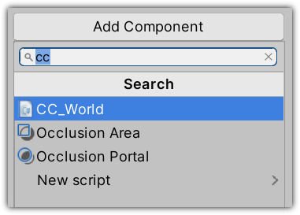
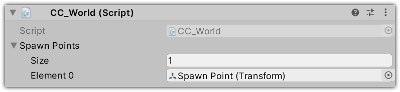
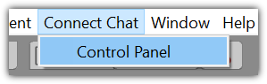
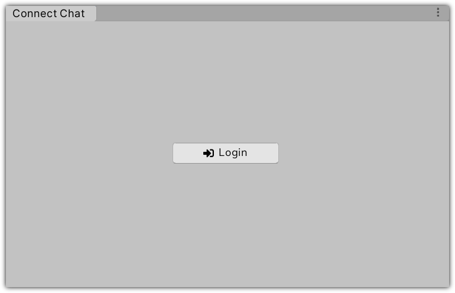
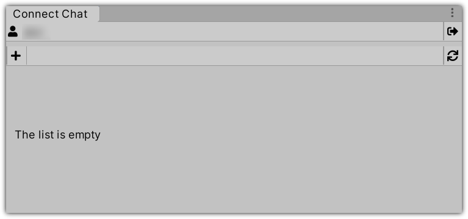
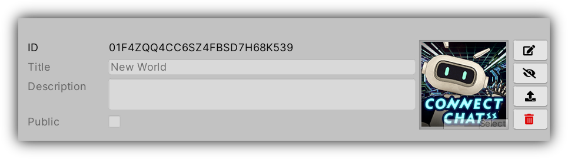
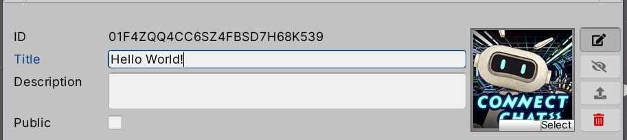

Creating Your First World
Creating a new world is a simple process:
- Create and setup a scene containing your world content.
- Log into your VR Connect account.
- Add a new world to your list.
- Upload the scene.
- Publish your world.
Step 1 - Create and Setup the Scene
Create a new scene and populate it with the content of your world.

When you are done, add an empty GameObject and attach the CC World component to it.

Add spawn points to the scene by creating empty GameObjects:

and add them to the CC World's spawn point list.

⚠️ Not all Unity components or shaders are usable in the scene: see here for the list of allowed components, and here for the list of allowed shaders.
Step 2 - Log into VR Connect
Open the control panel using the Connect Chat menu.

Once the control panel window appears, press the Login button to login into your [VR Connect] (https://connect.vrlab.dmm.com) account.

Press the Confirm button in the browser window that opened and return to Unity.

Once logged in the control panel will show the list of world you have uploaded.

In addition to the world list, the control panel windows show the user information and has a few useful controls:

Step 3 - Adding a New World
Click the + button to create a new world; the world list will update and a new world should be added to your list:

ID: The internal id of the world.
Title: The name of the world and what is shown in the world selections screen.
Description: One or two short sentences describing your world.
Public: Shows if the world is usable by everyone or only by you (you will still be able to invite people into one instance).
The image on the right is the world's thumbnail: a 256x256 texture that will be shown together with the world title on the world selection screen.
On the far right there are four icons:
Edit: Toggles the edit mode for the world details.
Publish: Publishes the world and make it available in the World Selection window.
Build & Upload: Builds the world asset bundle using the current active scene and uploads it.
 Delete: Deletes the world (this operation cannot be undone).
Delete: Deletes the world (this operation cannot be undone).
Editing your World Details
Click the Edit button and toggle the edit mode for your world.
You can now edit the title and description of your world, change its thumbnail, and toggle it's visibility flag.

Custom thumbnails must be 256 x 256 pixels and be imported with the following settings:

Step 4 - Uploading
To building and uploading your world just click on the build button: a dialog will appear once the upload is completed. If anything wrong happens (for example, the scene contains components that are not allowed), check the console for error messages.
Step 5 - Publish your World
Once the details of your world are in order and the scene has been uploaded press the publish button to make your world usable in Connect Chat.